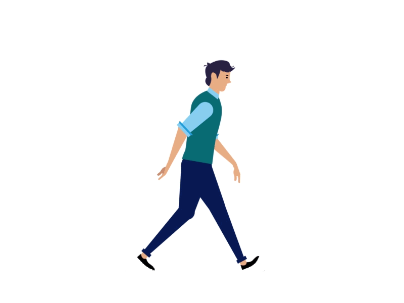

퀴즈 풀어서 마주치는 사람 피하기!
다른 사람과의 대면 접촉을 제한하는 것이 코로나바이러스 감염증 2019(COVID-19) 전파를 줄이는 가장 좋은 방법입니다.
사회적 거리두기는 "물리적 거리두기"라고도 하며 집 밖에서 다른 사람들과의 거리를 유지하는 것입니다.
사회적 또는 물리적 거리두기를 실천하기 위해서는 다른 사람들과 최소 6피트 거리(대략 팔 2개 길이)를 유지해야 합니다.
길가에 사람이 많습니다!
길가에 있는 사람들과 적절한 거리를 두어 사회적 거리두기를 실천하세요!
퀴즈의 정답을 맞춰 사람들을 피해 이동하세요!
코로나 일반 국민 예방 수칙 중 옳은 것은 무엇일까?
1. 고인 물에 비누로 꼼꼼히 손 씻기
2. 기침, 재채기할 때 옷소매로 입과 코 가리기
3. 씻지 않은 손으로 눈, 코, 입 만지기
정답을 클릭하세요!
코로나 일반 국민 예방 수칙 중 틀린 것은 무엇일까?
1. 의료기관 방문 시 마스크 착용하기
2. 사람 많은 곳은 눈치 보며 기꺼이 방문하기
3. 발열, 호흡기 증상이 있는 사람과 접촉 피하기
정답을 클릭하세요!
다음 중 올바른 마스크 착용법은 무엇일까?
1. 수건이나 휴지를 덧대서 밀착력을 높여 성능을 강화하기
2. 얼굴 크기에 맞는 마스크를 선택해 잘 밀착되도록 착용하기
3. 착용 후 마스크 겉면을 골고루 만져서 얼굴과 밀착시키기
정답을 클릭하세요!